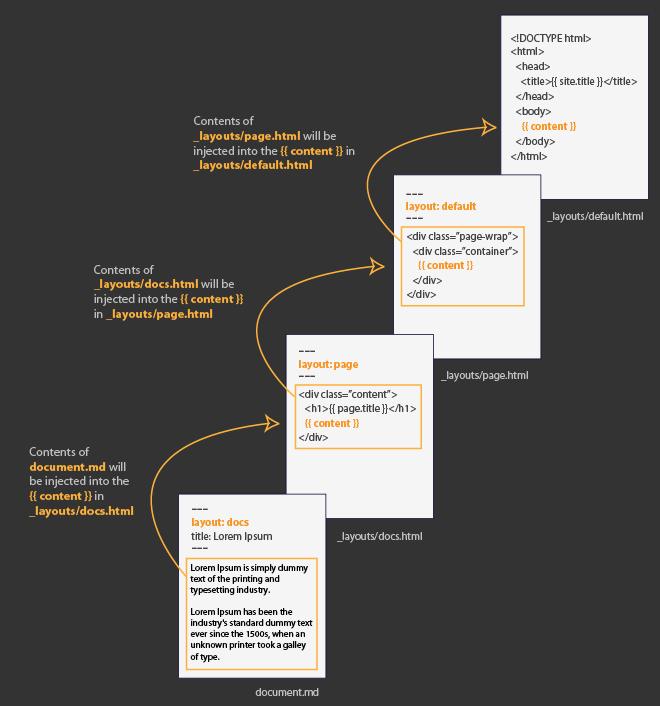

HTMLサイトをJekyllに変換
Jekyllサイトのテーマをお探しでしたら、既存のJekyllテーマにこだわる必要はありません。様々な静的HTMLファイルをJekyll Webサイトに変換するのは簡単です。
色々な意味で、現在の静的サイトは既にJekyll Webサイトです。Jekyllを使うと、ファイルを処理するときに、サイトの一部（テンプレートへのページの挿入、ナビゲーション用のリストのレンダリング、フィードとサイトマップの生成など）を自動化できます。
HTMLサイトにJekyllテンプレートを適用する方法を理解すると、Jekyllテーマの様々なオプションであなたの世界が開けるでしょう。オンラインでJekyll themesを探す代わりに、サイトのための多種多様なHTMLテンプレートから選ぶことができます。HTMLテンプレートを必要に応じて素早くJekyll化し、Jekyllの出力用に構築しましょう。
Webサイトは洗練された機能とコントロールを持つことができますが、このチュートリアルでは単純化して説明します。
Jekyll Webサイトとは
まずは、基礎から始めましょう。Jekyllサイトを基本レベルまで削除すると、何が起こっているのか分かりやすくなります。Jekyll gemをまだインストールしていないなら、インストールしましょう。
3つのファイルからなる基本のJekyllサイトからスタートします。
├── _config.yml
├── _layouts
│ └── default.html
└── index.md
my_jekyll_siteかあなたの好きなフォルダにこれらの3つのファイルを手動で作成します。default.htmlは_layoutsフォルダに入れます。
$ touch _config.yml index.md default.html
$ mkdir _layouts && mv default.html _layouts
好きなエディタを起動し、default.htmlとindex.md、_config.ymlファイルに以下のような基本の内容を書き込みます。
_config.yml
name: My Jekyll Website
_layouts/default.html
<!DOCTYPE html>
<html>
<body>
{{ content }}
</body>
</html>
index.md
---
title: My page
layout: default
---
# {{ page.title }}
Content is written in [Markdown](https://learnxinyminutes.com/docs/markdown/). Plain text format allows you to focus on your **content**.
<!--
You can use HTML elements in Markdown, such as the comment element, and they won't be affected by a markdown parser. However, if you create an HTML element in your markdown file, you cannot use markdown syntax within that element's contents.
-->
cdでmy_jekyll_siteに移動し、serveでサイトをサーバーに構築します。
cd my_jekyll_site
jekyll serve
Gemfileがあるのなら、代わりにbundle exec jekyll serveと入力してBundlerを使用してください。
サイトをサーブしたら、http://127.0.0.1:4000/（http://localhost:4000/と同じ）でプレビューを見ることができます。サイトのファイルはデフォルトでは_siteに構築されます。
これは最も基本的な機能レベルのJekyllのサイトです。以下が起こっていることです。
_config.ymlファイルは、Jekyllがサイトを変換するときに使用する設定が書かれています。空の設定ファイルなら、Jekyllサイト構築時にデフォルトの値が使用されます。例えば、MarkdownをHTMLに変換するのに、Jekyllはその他の指定が無ければ、自動でkramdown Markdown filterを使用します。- Jekyllはfront matterタグ（
index.mdのような2行の---のセット）のあるファイルを探し、そのファイルで作業を行います（サイト変数の処理、Liquidのレンダリング、MarkdownからHTMLへの変換）。 - Jekyllは全てのページとポストをfront matterで指定されたレイアウト（
default）の{{ content }}変数に押し出します。 - 処理の終わったファイルを
_siteディレクトリに.htmlで書き出します。
Jekyllのファイル処理については解釈の順番にも情報があります。
Jekyllサイトの働きの基本的な理解で、多くのHTMLテーマをJekyll用に変換することができます。以降のセクションでは、その手順を順を追って説明します。
1. デフォルトレイアウトのテンプレートを作る
HTMLテーマを見つけ、defaultレイアウトとして保存します。既存のサイトを変換・複製している場合は、ページを右クリックしてソースコードを表示できます。
例えば、同じブランドのドキュメントサイトを作るために、会社のサイトを複製している場合。HTMLで構築した個人サイトをJekyllで作ろうとしている場合。その様なときは、HTMLソースコードを取得しましょう。
サイトに関係なく、ライセンスを確認し、コードをコピーして使用する権利があることを確認してください。
ソースコードをdefault.htmlにコピー&ペーストします。default.htmlファイルは_layoutsフォルダに入れます。これがページやポストのデフォルトレイアウトになります — Jekyllがサイトを構築するときに各ページやポストにこのレイアウトを使用します。
テンプレートを探す際には、HTML出力されたテンプレートが必要です。テンプレートにPHPタグやその他ダイナミックスクリプトがある場合は、それらをHTMLやLiquidに変換する必要があります。Liquidは動的コンテンツを取得するためのJekyllテンプレートシステムです。
default.htmlをローカルでブラウザで開き、オンライン時とサイトの見た目が変わらないかを確認します。おそらく、CSS, JSやイメージへのパスを調整する必要があるでしょう。
例えば、相対パスで指定されていれば、同じアセットをJekyllサイトにダウンロードするか、クラウドのアセットに絶対パスで指定（src =" // のような構文がローカルブラウザで動作するためにはsrc = "http：//のように接頭辞が必要です）する必要があります。
Jekyllはパスの前にサイトURLを追加するためのいくつかのフィルタを提供しています。例えば、スタイルシートを次のようにします。
{{ "/assets/style.css" | relative_url }}
relative_urlフィルタは設定ファイルからbaseurlの値（例えばblog）を取得します。これは、ドメインのrootよりサブパスでホストしているとき（例えばhttp://mysite.com/blog/）に便利です。
absolute_urlフィルタを使用することもできます。これは、urlとbaseurlの値を取得します。
{{ "/assets/style.css" | absolute_url }}
urlとbaseurlは次のように設定ファイルで定義することができます。
url: http://mysite.com
baseurl: /blog
出力される結果は、http://mysite.com/blog/assets/style.cssとなります。
スラッシュ(/)から始まるページのurlプロパティは、urlやbaseurlの最後のスラッシュが省略されるためです。
必ずしもリンクパスにフィルタを追加する必要はありません。サイト全体に相対リンクを使用することもできます。ただし、アセットへのパスをコーディングすることにした場合は、それらが正しくレンダリングされるようにします。
ローカルのdefault.htmlはブラウザできちんと表示されていますか？ 全ての画像、スタイルや他の要素は表示されていますか？ できていれば、OKです。そのまま進めていきましょう。このテンプレートをレイアウトとして全てのページやポストに使うことも、必要に応じて多くのテンプレートを作ることもできます。
次のセクションでは、レイアウトのコンテンツ部を空白にして、Jekyllページに動的に取り込まれるプレースホルダタグに置き換えます。
2. レイアウトのコンテンツ部を識別する
default.htmlでページコンテンツの開始部（通常はh1やh2タグ）を見つけます。表示されるタイトルを{{ page.title }}で置き換えます。
コンテンツ部を取り除き（ナビゲーションメニューやサイドバーフッターは残します）、{{ content }}に変えます。
ブラウザで再度レイアウトをチェックし、重要なdivや他の要素を誤って削除していないか確認します。タイトルとページコンテンツだけが変更されてる状態です。この段階では内容はブランクで、プレースホルダタグがそのまま表示されています。
3. front matterタグのある2つのファイルを作成する。
rootディレクトリに2つのファイル（index.mdとabout.md）をさくせいします。
index.mdファイルには以下のように、titleとlayoutプロパティのあるfront matterタグを追加します。
---
title: Home
layout: default
---
Some page content here...
テスト用に同様のfront matterタグのあるabout.mdも作成します。
ページでレイアウトを指定しない場合、Jekyllは単にスタイルの内ベーシックなHTMLページとしてレンダリングします。
4. 設定ファイルを追加する
rootディレクトリに_config.ymlを追加します。_config.ymlでは、オプションで好きなMarkdownフィルタを指定することができます。デフォルトはkramdownです（指定する必要はありません）。他のフィルタが指定されていなければ、設定ファイルは自動でデフォルトの設定を使用します。
markdown: kramdown
GitHub Flavored Markdown (GFM)の様に振る舞うようkramdownのオプションを指定することもできます。
kramdown:
input: GFM
auto_ids: true
hard_wrap: false
syntax_highlighter: rouge
5. ページのテスト
jekyll serveを実行しindex.htmlとabout.htmlページを切り替えます。どちらのページもdefaultレーアウトが読み込まれているはずです。
コンテンツを別々のファイルに出力し、同じレイアウトを定義することができました。
必要なだけページのレイアウトを定義できます。特定のページで使用したいレイアウトを指定するだけです。例えば：
---
title: Sample page
layout: homepage
---
このページは、_layoutsフォルダのhomepage.htmlテンプレートを使用します。
front matter変数でレイアウトを指定する必要がないように、ページやポスト、コレクションのデフォルトfront matterタグを、_config.ymlファイルでセットすることもできます。デフォルトの設定に関しては、このチュートリアルの範囲外ですので、作業に戻ります。
6. サイト変数の設定
ページタイトルを{{ page.title }}タグを使用することで既に指定しました。しかし、使用するtitleタグは他にもあります。ブラウザのタブやウィンドウに表示するtitleタグもあります。通常はページのタイトルとサイトのタイトルをここに表示します。
default.htmlレイアウトのheadタグの間にあるtitleタグを探します。
<title>ACME Website</title>
以下のサイト変数を挿入します。
<title>{{ page.title }} | {{ site.title }}</title>
_config.ymlを開き、titleプロパティにサイト名を追加します。
title: ACME Website
_config.ymlファイルに追加したプロパティには、siteネームスペースでアクセスできます。同様にページのfront matterのプロパティにはpageネームスペースでアクセスできます。変数にアクセスするには、siteやpageの後にドットをつけます。
Ctrl + CでJekyllサーバーを停止し、リスタートします。titleタグがきちんと表示されることを確認します。
設定ファイルを修正する度に、変更を反映させるにはJekyllを再起動します。他のファイルを修正したときは、Jekyllが自動で変更をピックアップし再構築します。
サイトに使用する他の変数があれば、同様の操作を繰り返します。
7. ポストとページを表示する
ホームページにポストのリストを表示します。まずは、いくつかのポストを作成します。
_postsフォルダに基本のYYYY-MM-DD-title.mdポストフォーマットでいくつかのポストを追加します。
2017-01-02-my-first-post.md2017-01-15-my-second-post.md2017-02-08-my-third-post.md
各ポストには、基本の内容を追加します。
---
title: My First Post
layout: default
---
Some sample content...
では、ポストを並べるレイアウトを作成しましょう。_layoutsに以下の内容のhome.htmlを作成します。
---
layout: default
---
{{ content }}
<ul class="myposts">
{% for post in site.posts %}
<li><a href="{{ post.url }}">{{ post.title}}</a>
<span class="postDate">{{ post.date | date: "%b %-d, %Y" }}</span>
</li>
{% endfor %}
</ul>
rootディレクトリにblog.mdを、homeレイアウトを指定して作成します。
---
title: Blog
layout: home
---
今回の場合、blog.mdのコンテンツはhomeレイアウトの{{ content }}タグに入ります。そして、そのhomeレイアウトがdefaultレイアウトの{{ content }}タグに入ります。
レイアウトの働き方
レイアウトに他のレイアウトが指定されていたら、最初のレイアウトのコンテンツが2つ目のレイアウトの{{ content }}に取り込まれることを意味します。アナログで言えば、ロシアのマトリョーシカのように一方をその中に取り込みます。各レイアウトは指定したレイアウトに入ります。
以下の図はJekyllでレイアウトがどのように働くかを示しています。

この例では、document.mdでlayout: docsが指定されており、そのコンテンツはdocs.htmlの{{ content }}に入ります。docsレイアウトがlayout: pageを指定しているので、docs.htmlのコンテンツはpage.htmlの{{ content }}に入ります。最後にpageレイアウトでlayout: defaultを指定しているので、page.htmlのコンテンツがdefault.htmlの{{ content }}に入ります。
複数のレイアウトが必要なければ、defaultだけを使用すればいいです。サイトのデザインの選択権はあなたにあります。通常はポスト用とページ用のレイアウトを用意しますが、defaultテンプレート（通常はサイトの最初と最後を定義します）を継承するようにします。
ブラウザでblog.htmlに行き、ポストのリストを確認します。
ここで説明した方法を使用する必要はありません。これらの投稿を表示するために index.mdのようなページにforループを単に追加することもできます。ただし、他の機能に対してより複雑なロジックがある場合があるので、頻繁にコンテンツを入力するページ領域とは別のテンプレートにロジックを格納すると便利です。
最低限、レイアウトにはレンダリング時にcontentを受け取る{{ content }}が必要です。
Forループ
ここで少し立ち止まって、forループのロジックをもう少し詳しく見てみましょう。LiquidのForループは最も一般的なLiquidタグの一つです。ForループはJekyllサイトのコンテンツを反復して、その結果を構築することができます。forループは、ループ中の場所に基づく（繰り返しの最初や最後といった）利用可能なプロパティがあります。
ポストを取得するのは、forループでできることのほんの一部に過ぎません。例えば、特定のカテゴリのポストを表示したい場合は、categoriesプロパティをポストのfront matterに追加し、そのカテゴリで見つけます。limitプロパティを使用して、結果の数を制限することもできます。以下がその例です。
<ul class="myposts">
{% for post in site.categories.podcasts limit:3 %}
<li><a href="{{ post.url }}">{{ post.title}}</a>
<span class="postDate">{{ post.date | date: "%b %-d, %Y" }}</span>
</li>
{% endfor %}
</ul>
このループは、front matterにカテゴリがpodcastsという指定がある、最近の3ポストを取得します。
8. ナビゲーションの設定
ポストを設定しましたので、ページナビゲーションの設定を行いましょう。多くのWebサイトはサイドバーやヘッダーエリアにナビゲーションがあります。
このチュートリアルでは、生成したページのシンプルなリストを取得します。手で数えられるようなページだけなら、site.pagesオブジェクトにforループを使用して、front matterで並び順を指定しリストを作ることができます。
ページのリストが表示されているコード部分を識別します。通常これはさまざまな子要素<li>を持つ<ul>要素です。そのコードを次のコードに置き換えます。
<ul>
{% assign mypages = site.pages | sort: "order" %}
{% for page in mypages %}
<li><a href="{{ page.url | absolute_url }}">{{ page.title }}</a></li>
{% endfor %}
</ul>
この例では、次のように各ページのfront matterにtitleとorderが指定されていると仮定しています。
---
title: My page
order: 2
---
orderプロパティはページのソートで取得され、リストの最初に1が表示されます
別のデータファイルで管理しているページのリストを繰り返すこともできます。これは、たくさんのページがある場合や、保存したいページに関する他のプロパティがある場合に適しています。
この方法でリンクを管理するために、jekyllプロジェクトに_dataフォルダを作成します。このフォルダに、次の内容のnavigation.ymlを作成します。
- title: Sample page 1
url: /page-1-permalink/
- title: Sample page 2
url: /page-2-permalink/
- title: Sample page 3
url: /page-3-permalink/
YAMLをこれまで書いたことが無くても、すぐに慣れることができるでしょう。YAMLでできることを見てください。
必要に応じて、このデータファイルに各項目の追加のプロパティを保存できます。リスト項目は、表示したい順序に並べます。
データファイルからページのリストを表示するには、次のようなコードを使用します。
<ul>
{% for link in site.data.navigation %}
<li><a href="{{ link.url }}">{{ link.title }}</a></li>
{% endfor %}
</ul>
ドキュメンテーションを構築するときなど、ナビゲーションに対してより高度な要件がある場合は、ナビゲーションの詳細なチュートリアルをご覧ください。
9. サイトをインクルードで単純化する
default.htmlファイルが大規模で作業が困難だとします。HTMLコードをincludeファイルとして配置することで、レイアウトを分割することができます。
rootディレクトリに_includesフォルダを追加します。そのフォルダにsidebar.htmlを追加します。
default.htmlレイアウトからサイドバーを取り除き、sidebar.htmlに挿入します。
default.htmlのサイドバーがあったところには、”include”を配置します。
{% include sidebar.html %}
ヘッダーやフッターなどテーマの他の要素も同様にして分割することができます。同じ要素は他のレイアウトファイルに適用することもできます。この方法なら、コードを複製せずに済みます。
10. RSS feed
JekyllサイトにRSS feedが必要です。こちらは基本のRSS feed構文です。RSSファイルをJekyllに作成するために、rootディレクトリにfeed.xmlを作成し、以下を追加します。
---
layout: null
---
<?xml version="1.0" encoding="UTF-8" ?>
<rss version="2.0">
<channel>
<title>{{ site.title }}</title>
<link>{{ site.url }}</link>
<atom:link href="{{ page.url | prepend: site.url }}" rel="self" type="application/rss+xml" />
<description>{{ site.description }}</description>
<lastBuildDate>{{ site.time | date_to_rfc822 }}</lastBuildDate>
{% for post in site.posts %}
<item>
<title>{{ post.title }}</title>
<link>
{{ post.url | prepend: site.url }}
</link>
<description>
{{ post.content | escape | truncate: '400' }}
</description>
<pubDate>{{ post.date | date_to_rfc822 }}</pubDate>
<guid>
{{ post.url | prepend: site.url }}
</guid>
</item>
{% endfor %}
</channel>
</rss>
_config.ymlファイルにtitleとurl、descriptionのプロパティを忘れないでください。
このコードは最近の20ポストを探すためにforループを使用しています。Liquid filtersを使用して、ポストのコンテントから400時以降を切り捨てています。
default.htmlレイアウトのヘッダからRSSやAtom feedへの参照を探し、先ほど作成したファイルへの参照に書き換えます。
<link rel="alternate" type="application/rss+xml" href="{{ site.url }}/feed.xml" title="{{ site.title }}">
jekyll-feedというgemを追加することで、自動でfeedを生成することもできます。このGemは、GitHub Pagesでも動きます。
11. sitemapを追加する
最後に、site mapを追加します。rootディレクトリにsitemap.xmlを作成し、次のコードを追加します。
---
layout: null
search: exclude
---
<?xml version="1.0" encoding="UTF-8"?>
<urlset xmlns="http://www.sitemaps.org/schemas/sitemap/0.9">
{% for page in site.pages %}
<url>
<loc>{{page.url}}</loc>
<lastmod>{{site.time | date: '%Y-%m-%d' }}</lastmod>
<changefreq>daily</changefreq>
<priority>0.5</priority>
</url>
{% endfor %}
{% for post in site.posts %}
<url>
<loc>{{post.url}}</loc>
<lastmod>{{site.time | date: '%Y-%m-%d' }}</lastmod>
<changefreq>daily</changefreq>
<priority>0.5</priority>
</url>
{% endfor %}
</urlset>
全てのページとポストをsitemapに追加するために、再びforループを使用しています。
jekyll-sitemapというgemを追加することで、自動でsitemapを生成することもできます。このGemは、GitHub Pagesでも動きます。
12. 外部サービスを追加する
（コンタクトフォームや検索、コメントなど）他のサービスが必要になったら、サードパーティーサービスを探してください。例えば、以下のサービスを使用できます。
- コメント: Disqus
- ニュースレター: Tinyletter
- コンタクトフォーム: Wufoo
- 検索: Algolia Docsearch
<!– * For comments: Disqus
- For a newsletter: Tinyletter
- For contact forms: Wufoo
- For search: Algolia Docsearch –>
静的サイトのサービスの詳細は、Third PartiesリストとCloudCannonのチュートリアルを見てください。
JekyllのページはHTML、CSS、JavaScriptで構成されており、埋め込みコードはほとんど問題なく動作します。
これらのサービスのコードを統合するとき、Jekyllサイトのページにfront matterが無ければ、Jekyll八草のページの内容に手を加えないことを覚えておいてください。サイト構築時に_siteフォルダにページが渡されるだけです。
（設定ファイルで定義した変数を有効にするなど）Jekyllのプロセスを経たい場合は、front matterタグを追加してください。ページにレイアウトを適用したくない場合は、次のようにlayout: nullを指定します。
---
layout: null
---
13.最後に
Webサイトはさらに見た目をよくしたり機能を実装することができますが、このチュートリアルでは基本部分をカバーしました。Jekyllサイトの沢山の機能を使えるようになったはずです。
GitHub Pages、Netlify、Vercel、Renderや、s3_website pluginを使用してAmazon AWS S3、もしくはFTPでWebサーバーにファイルを転送して、あなたのサイトを公開しましょう。
アセットを含めたレイアウトをRuby gemにパッケージして、Jekyllのテーマを作ることもできます。
追加情報
こちらは、Jekyllサイトを作るための追加のチュートリアルです。